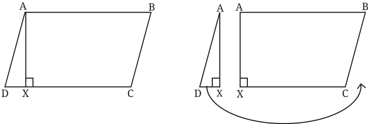
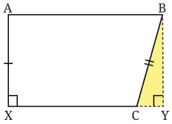
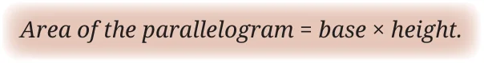
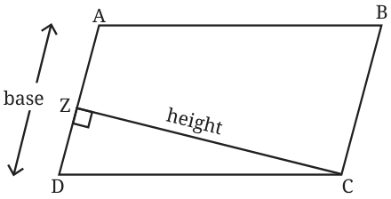

<!DOCTYPE html>
<html lang="en">
<head>
<meta charset="UTF-8">
<meta name="viewport" content="width=device-width,initial-scale=1">
<title>Parallelogram — Area</title>
<meta name="description" content="Class 8 Mathematics · Part 2 · Area · Parallelogram">
<link rel="icon" href="data:image/svg+xml,<svg xmlns='http://www.w3.org/2000/svg' viewBox='0 0 100 100'><text y='.9em' font-size='90'>📘</text></svg>">
<link rel="stylesheet" href="../../../assets/book.css">
<link rel="stylesheet" href="https://cdn.jsdelivr.net/npm/katex@0.16.11/dist/katex.min.css" crossorigin="anonymous">
</head>
<body>
<header class="topbar">
<div class="topbar-in">
  <div class="crumb">
    <span class="c1"><a href="../../../index.html">Library</a> · <a href="../../index.html">Class 8 Mathematics · Part 2</a></span>
    <span class="c2">Area · Parallelogram</span>
  </div>
  <a class="tb-btn" data-nav="prev" href="../../07-area/07-figure-it-out/index.html" title="Figure it Out">←</a>
  <details class="drawer"><summary class="tb-btn" title="Sections in this chapter">☰</summary>
<div class="drawer-panel"><div class="dh">Area</div><a href="../01-rectangle-and-squares-7.1/index.html">7.1 Rectangle and Squares</a><a href="../02-why-can-t-perimeter-be-a-measure-of-area/index.html">Why Can’t Perimeter be a Measure of Area?</a><a href="../03-figure-it-out/index.html">Figure it Out</a><a href="../04-triangles/index.html">Triangles</a><a href="../05-figure-it-out/index.html">Figure it Out</a><a href="../06-area-of-any-polygon/index.html">Area of any Polygon</a><a href="../07-figure-it-out/index.html">Figure it Out</a><a href="../08-parallelogram/index.html" aria-current="page">Parallelogram</a><a href="../09-figure-it-out/index.html">Figure it Out</a><a href="../10-rhombus/index.html">Rhombus</a><a href="../11-trapezium/index.html">Trapezium</a><a href="../12-finding-the-area-using-two-copies-of-the-trapezium/index.html">Finding the Area Using Two Copies of the Trapezium</a><a href="../13-figure-it-out/index.html">Figure it Out</a><a href="../14-areas-in-real-life/index.html">Areas in Real Life</a><a href="../15-summary/index.html">SUMMARY</a></div></details>
  <a class="tb-btn" data-nav="next" href="../../07-area/09-figure-it-out/index.html" title="Figure it Out">→</a>
  <button class="tb-btn" data-theme-toggle title="Toggle light / dark" aria-label="Toggle light or dark theme">◐</button>
</div>
<div class="progress"><span style="width:91.4%"></span></div>
</header>
<main class="wrap">
<div class="sec-head">
  <p class="eyebrow"><a href="../index.html">Chapter 7 · Area</a></p>
  <h1>Parallelogram</h1>
  <p class="sec-meta">Textbook pages 14–15 · 7 figures</p>
</div>
<article class="prose">
<p>We can derive a special formula for the area of a parallelogram by converting it into a rectangle of equal area.</p>
<p>Give a method to convert a parallelogram into a rectangle of equal area. You can try this using a cut-out of a parallelogram. Construct AX perpendicular to \(CD -\) represented in short as AX ^ CD . We call this a height of the parallelogram. Cut the parallelogram into \(\triangle AXD\) and trapezium ABCX.</p>
<figure class="fig"></figure>
<p>Can \(\triangle AXD\) and ABCX fit together, as shown in the figure, to get a rectangle? One simple way to check this is to identify the triangle that can complete ABCX to a rectangle, and then check if this triangle is congruent to \(\triangle AXD\).</p>
<figure class="fig"></figure>
<p>Observe that \(\angle X = 90 ^{\circ}\) , and so \(\angle A = 90 ^{\circ}\) , since AB‖XC. We need another right angle to get a rectangle (what about the fourth angle?). To get the third right angle, extend XC to the right and then construct a line perpendicular to XC that passes through B. The \(\triangle BYC\) completes ABCX to a rectangle. Is \(\triangle AXD\) congruent to it? \(BY = AX\) (since ABYX is a rectangle) \(\angle BYC = \angle AXD = 90 ^{\circ} BC = AD\) (since ABCD is a parallelogram) So, by the RHS congruency criterion, \(\triangle BYC \cong \triangle AXD\). Thus, \(\triangle AXD\) will fit exactly over the region occupied by \(\triangle BYC\), and convert the parallelogram into a rectangle. The process of cutting a figure into pieces and rearranging them to get a different figure of equal area is called dissection.</p>
<figure class="fig wide"></figure>
<p>How do we find the area of a parallelogram A B by dissecting it into a rectangle? We have Area of the parallelogram \(ABCD =\) Area of the rectangle ABYX.</p>
<p>Area of the rectangle \(ABYX = AX \times XY\). base AX is the height of the parallelogram.</p>
<p>Is there a relation between XY and DC? Since \(DX = CY\), we get \(DC = XY\) by adding the common part XC to DX and CY. Since DC is the base of the parallelogram, we get</p>
<figure class="fig"></figure>
<figure class="fig"></figure>
<p>Can the area of the parallelogram be determined by taking another side as the base and its corresponding height?</p>
<p>Can the parallelogram be cut along CZ and rearranged to form a rectangle? It can be seen that this is indeed possible, and so any side and its corresponding height can be used to find the area of a parallelogram.</p>
</article>
<nav class="pager"><a class="" data-nav="prev" href="../../07-area/07-figure-it-out/index.html"><span class="dir">← Previous</span><span class="t">Figure it Out</span><span class="ch">Area</span></a><a class="nx" data-nav="next" href="../../07-area/09-figure-it-out/index.html"><span class="dir">Next →</span><span class="t">Figure it Out</span><span class="ch">Area</span></a></nav>
</main><footer class="site">Generated from the source textbook PDFs · text, figures and exercises belong to their respective publishers.</footer><script defer src="https://cdn.jsdelivr.net/npm/katex@0.16.11/dist/katex.min.js" crossorigin="anonymous"></script>
<script defer src="https://cdn.jsdelivr.net/npm/katex@0.16.11/dist/contrib/auto-render.min.js" crossorigin="anonymous"
  onload="renderMathInElement(document.body,{delimiters:[
    {left:'\\(',right:'\\)',display:false},
    {left:'$$',right:'$$',display:true},
    {left:'\\[',right:'\\]',display:true}],throwOnError:false,ignoredTags:['script','noscript','style','textarea','pre','code']})"></script>
<script src="../../../assets/book.js"></script>
<script defer src="../../../../assets/search.js"></script>
</body>
</html>
